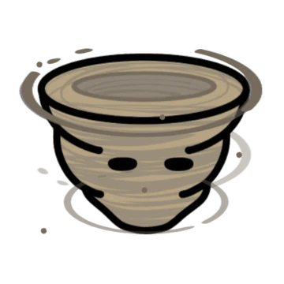

Dervish

Dervish are the fey of small swirling gusts of wind. They are playful in nature, sometimes mischievous, but are generally not powerful enough to do any serious harm.
Statblock (5e)
Dervish
Idle effect
If known, increases the distance targets are pushed by the cantrip Gust by 5ft. If not known, grants the cantrip.
Activation effect
Cast Warding Wind for free, but its duration is reduced to 1d4 turns (2d12 seconds outside of battle).
Summoning effect
Cast Gust of Wind for free, but rather than a 60ft line pushing in one direction, the gust is a 30ft radius centered on you which pushes either clockwise or counter clockwise. This direction can be flipped as a bonus action in later turns.
Summoning with more dervishes increases the distance pushed by 5ft. per dervish and the radius by 10ft. per dervish.